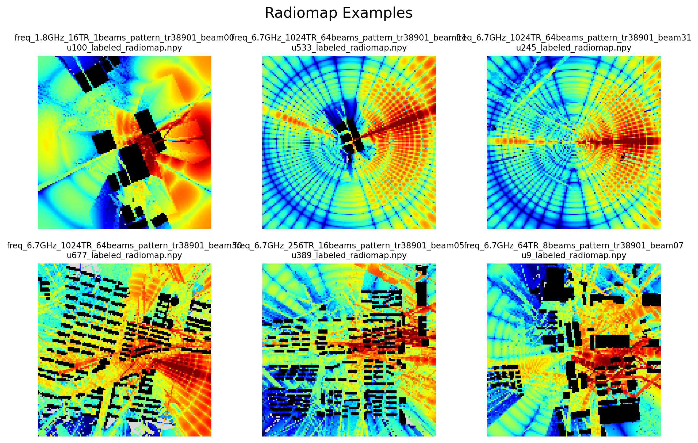

U6G XL-MIMO Radiomap Prediction: Multi-Config Dataset & Beam Map Approach¶
A public benchmark and reproducibility package for multi-configuration radiomap prediction in U6G / XL-MIMO systems.
This website serves as the documentation portal for the public release accompanying our paper “U6G XL-MIMO Radiomap Prediction: Multi-Config Dataset and Beam Map Approach.” It organizes the released dataset, benchmark definitions, pretrained models, and code for dataset generation, training, and evaluation.
- Paper (arXiv): https://arxiv.org/abs/2603.06401
- Dataset & Pretrained Models (Hugging Face): https://huggingface.co/datasets/lxj321/Multi-config-Radiomap-Dataset
- Code (GitHub): https://github.com/Lxj321/MulticonfigRadiomapDataset
- Documentation (Website): https://lxj321.github.io/MulticonfigRadiomapDataset/
Visual Example¶
Representative ray-tracing radiomap example from the released multi-configuration dataset.

Overview¶
Radiomap prediction is a fundamental capability for future wireless systems, especially in U6G / XL-MIMO scenarios where large arrays, multiple operating frequencies, and diverse transmitter configurations introduce strong variation across deployment conditions. To support reproducible research in this setting, this project provides a multi-configuration radiomap benchmark with unified task definitions, released data assets, pretrained checkpoints, and open-source code.
The benchmark is designed to study practical prediction settings including:
- radiomap estimation without field measurements
- sparse-input radiomap reconstruction
- generalization across unseen transmitter configurations
- transfer across unseen environments
By releasing both the benchmark resources and the end-to-end reproducibility pipeline, this project aims to support fair comparison, transparent evaluation, and follow-up research on radiomap learning for next-generation wireless systems.
Released Resources¶
The public release includes:
- Radiomaps for all benchmarked transmitter configurations
- Height maps for geometry-aware learning
- Beam maps as configuration-dependent side information
- Configuration files describing transmitter settings
- Ray-tracing scenes and simulation-related settings
- Pretrained models for the benchmark tasks
- Training and evaluation code
- Dataset generation pipeline
These resources are organized so that users can either directly evaluate released checkpoints, retrain models under the benchmark protocol, or inspect the full data-generation workflow.
Reproducibility at a Glance¶
| Resource | Status | Access |
|---|---|---|
| Paper | Public | arXiv |
| Dataset | Public | Hugging Face |
| Pretrained models | Public | Hugging Face |
| Code | Public | GitHub |
| Documentation | Public | This website |
Start Here¶
Depending on your purpose, the recommended entry points are:
Read the paper¶
Use the paper to understand the problem formulation, benchmark motivation, beam map design, model settings, and main experimental results.
Inspect or download the dataset¶
Use the Hugging Face repository to access the released dataset packages and pretrained models.
Run training or evaluation¶
Use the GitHub repository for scripts related to training, evaluation, and dataset generation.
Understand the benchmark structure¶
Use this website to navigate the task definitions, folder organization, naming conventions, and released resources.
Recommended Starting Paths¶
Path A — Evaluate released checkpoints¶
Choose this path if you want to reproduce the reported benchmark performance as quickly as possible.
- Download the required dataset package
- Download the corresponding pretrained checkpoint
- Follow the evaluation instructions in the code repository
Path B — Retrain benchmark models¶
Choose this path if you want to retrain the released models or build new baselines under the same benchmark protocol.
- Prepare the dataset according to the documented structure
- Select the target benchmark task
- Run the training pipeline from the code repository
- Evaluate the trained model on the designated test split
Path C — Regenerate data assets¶
Choose this path if you want to inspect or reproduce the data-generation workflow.
- Prepare the released ray-tracing scenes and related assets
- Run the generation steps for height maps, radiomaps, and beam maps
- Organize the outputs according to the benchmark format
Benchmark Scope¶
This benchmark focuses on multi-configuration radiomap prediction in U6G / XL-MIMO systems. The released resources are intended to support controlled study of:
- configuration-aware prediction
- geometry-aware learning
- sparse observation settings
- cross-configuration generalization
- cross-environment generalization
The website documentation explains how these tasks are defined and how the released data and code are organized to support them.
Documentation Structure¶
This website is organized into the following sections:
- Benchmark — task definitions and evaluation settings
- Dataset — released data assets and folder structure
- Pretrained Models — available checkpoints and task correspondence
- Code — repository structure and script organization
- Quickstart — recommended usage paths for new users
- Citation — how to cite the paper and project resources
Citation¶
If you use this project in your research, please cite:
@misc{li2026u6gxlmimoradiomapprediction,
title={U6G XL-MIMO Radiomap Prediction: Multi-Config Dataset and Beam Map Approach},
author={Xiaojie Li and Yu Han and Zhizheng Lu and Shi Jin and Chao-Kai Wen},
year={2026},
eprint={2603.06401},
archivePrefix={arXiv},
primaryClass={eess.SP},
url={https://arxiv.org/abs/2603.06401},
}
License¶
- Code: MIT License
- Dataset: CC-BY-4.0 License
Contributor¶
Xiaojie Li (李宵杰)
Email: xiaojieli@seu.edu.cn/xiaojieli@nuaa.edu.cn